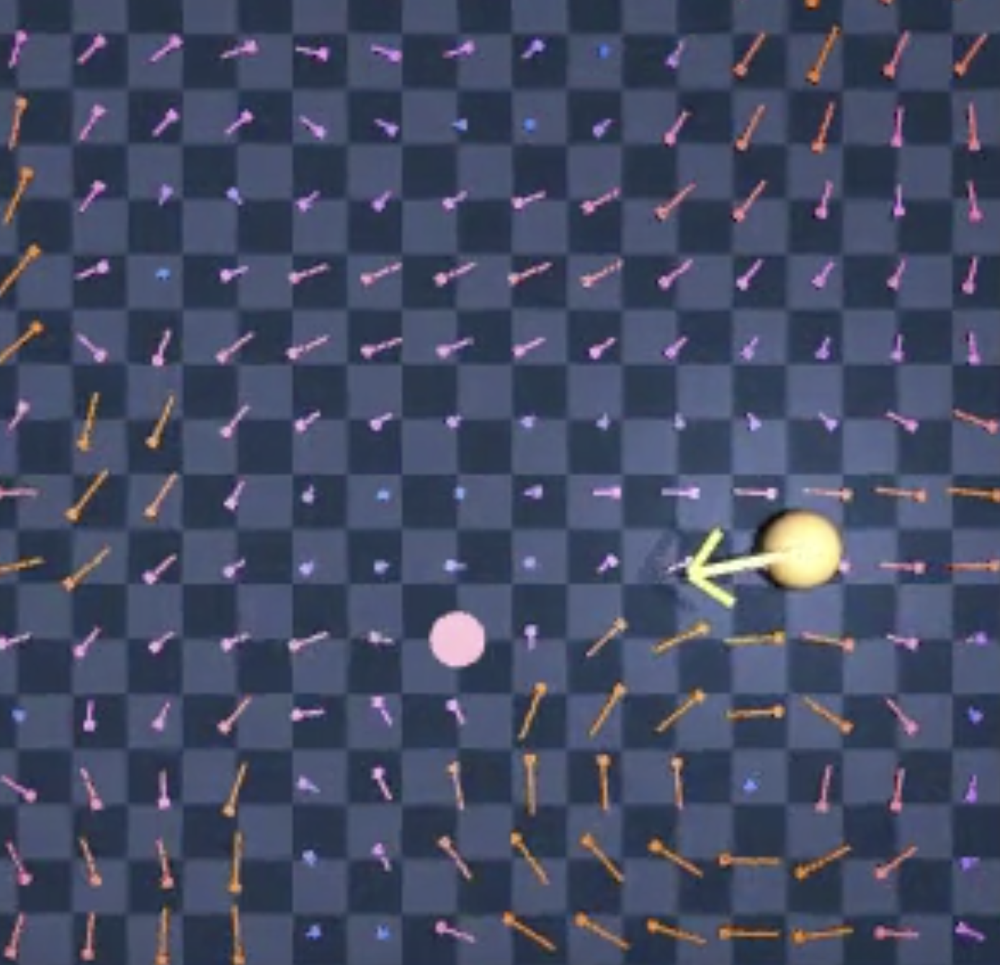
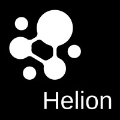
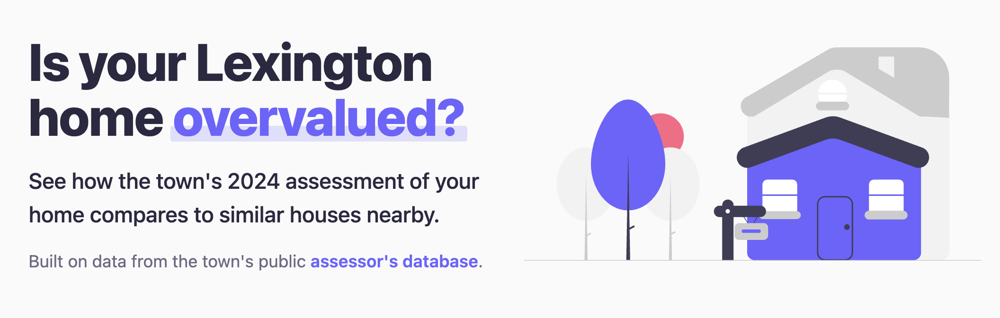
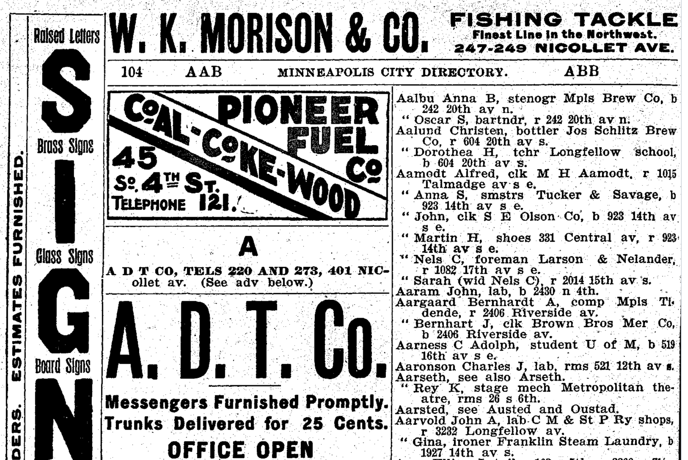

Hi! I am
Student, Creator, Explorer
Computer Science at Cornell University
I am a graduating senior passionate about applying machine learning to drive innovation.
My hobbies include rock climbing, practicing handstands, and reading news articles.

Researching optimal drone navigation through fluid currents using only imperfect existing flight data. Built a 2D Gymnasium environment with Taylor-Green vortex flow fields, generated a 20,000-episode offline dataset, and benchmarked 3 algorithms — MeanFlowQL achieved 100% success rate and reached the goal 3.9× faster than the baseline.
View on GitHub →PDD is an open-source developer tool (600+ GitHub stars) where AI agents generate and maintain code from prompt specifications. Contributed PRs adding an intelligent dependency identifier and a new LLM credential management system.
View Contributions →Worked on an electrical system diagram summarizer, using LLMs and accuracy validation to summarize features like transformers, circuit breakers, and fuses.
View on GitHub →
Worked directly with the founder to build an options flow dashboard analyzing over 10K daily trades across U.S. equities. Analyzed real-time options flow data and created visualizations to surface unusual activity.
View on GitHub →
A comparison tool that uses data from 12,000+ Lexington, MA properties to help residents assess how fair their property taxes are.
Try the tool →
An automated pipeline using YOLOv8 object detection and Tesseract OCR to extract structured resident data from scanned Minneapolis city directories (1900–1950), enabling timelines of residents at specific addresses.
View on GitHub →A chatbot that analyzes SEC Form 13F filings to answer questions about institutional investor behavior and trading trends, built with a PostgreSQL database, LangChain SQL Agent, and Streamlit.
View on GitHub →